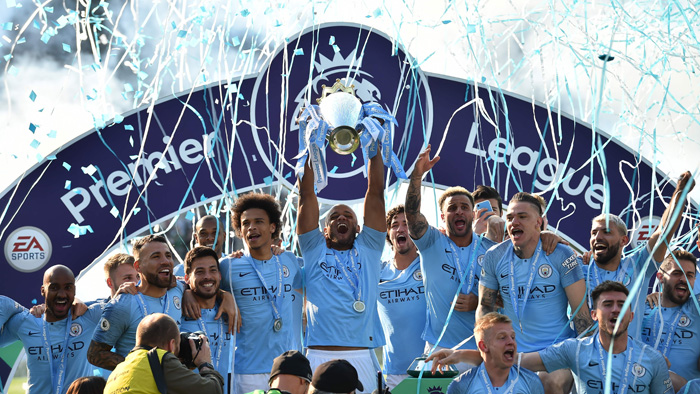

맨시티 우승

우승
잉글랜드 프리미어 리그에서 강한 모습을 보여주는 맨시티는 프리미어 리그 우승 6회에서 20-21시즌 우승하며 7회로 더욱 강한 모습을 보이고 있다.
카라바오 컵을 4년 연속 우승을 차지하는등 다른 컵 대회도 강한 모습을 보이는 맨시티지만 유독 UCL 챔피언스리그에서는 매번 8강에서 떨어지며
다소 약한 모습을 보여주고 있다 하지만 20-21 챔스에서는 8강 징크스를 깨고 결승까지 올라가는 쾌거를 이루어냈다.
맨시티의 총 우승횟수는 27회로 라이벌인 맨유는 63회로 차이가 많이 나지만 현재 리그에서 맨시티가 더 뛰어난 활약하고 있어 차이는 별로 의미가 없는 듯 하다.